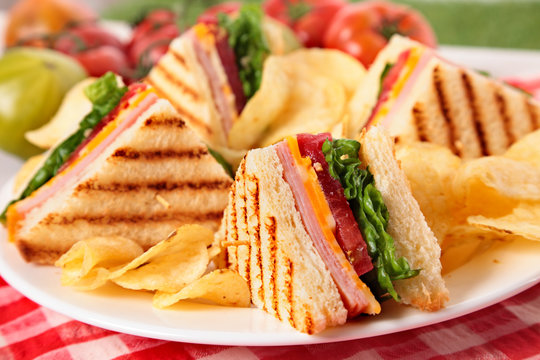
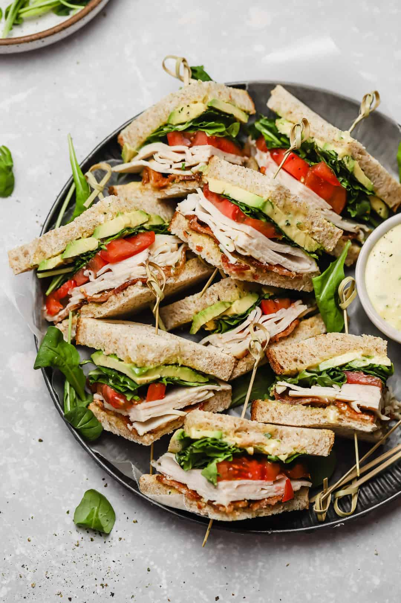

Ingredients

Cooking Instructions
Toast bread until golden, then spread a thin layer of butter on both sides of every slice.
Spread mayonnaise on one side of one slice of bread. Top with lettuce and tomato slices, then season lightly with salt and pepper. Place bacon slices on top.
Spread mayonnaise on both sides of a second piece of bread and place on top of bacon. Top with cheddar, turkey, and ham. Spread mayonnaise on one side of the last piece of bread and place on top of sandwich, mayo side down.
Secure with toothpicks and cut into 4 triangles.